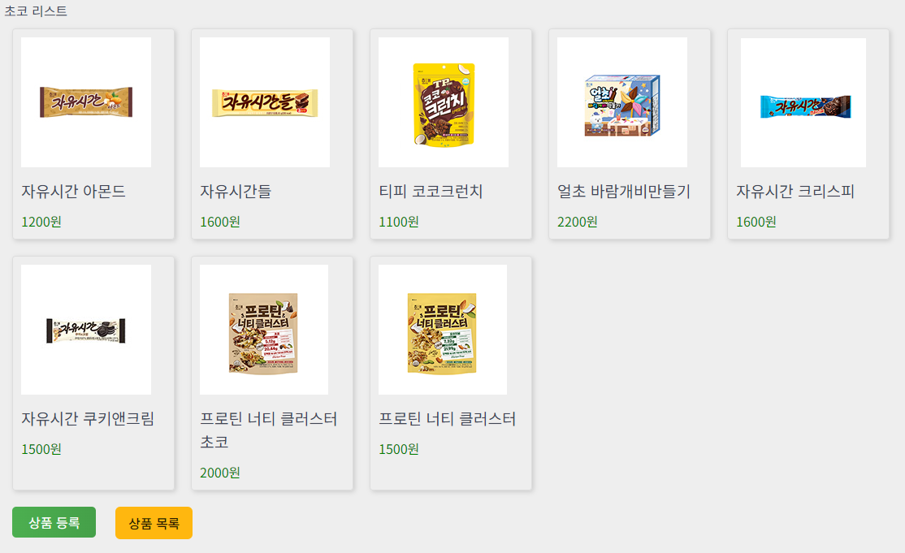

1. form 태그로 컨트롤러에 파일 전송
form 태그로 파일을 전송하기 위해서는 enctype을 multipart-form-data로 바꿔주어야 한다.
<form name="frm1" id="frm1" action="${path2 }/product/insProductPro.do" method="post" enctype="multipart/form-data">
input 태그의 file type으로 파일을 업로드 할 수 있다.
accept는 업로드할 파일의 종류다.
<input type="file" name="img2" id="img2" accept="image/*">
jquery를 이용해 file의 사이즈와 파일의 종류가 올바른지 alert로 확인한다.
<script>
$("input[type='file']").on("change", function(e){
let fileInput = $('input[name="img"]');
let fileList = fileInput[0].files;
let fileObj = fileList[0];
if(!fileCheck(fileObj.name, fileObj.size)) {
return false;
}
alert("통과");
});
// var, method related with attachFile
let regex = new RegExp("(.*?)\.(jpg|png)$");
let maxSize = 10485760; //10MB
function fileCheck(fileName, fileSize) {
if(fileSize >= maxSize) {
alert("파일 사이즈 초과");
return false;
}
if(!regex.test(fileName)) {
alert("해당 종류의 파일은 업로드 할 수 없습니다.");
return false;
}
return true;
}
</script>
2. 컨트롤러에서 서버에 파일을 업로드 하는 방법
form 태그로 전송한 파일을 MultipartFile 타입으로 받습니다.
@RequestParam("img") MultipartFile img
웹 애플리케이션의 실제 파일 시스템 경로를 사용하여 파일을 서버의 특정 디렉토리에 저장할 수 있습니다.
만약 디렉토리가 없다면, 디렉토리를 생성해줍니다.
private String uploadLoc = "/resources/upload";
String uploadDir = request.getServletContext().getRealPath(uploadLoc);
File dir = new File(uploadDir);
// 디렉토리가 없다면, 디렉토리를 생성함
if(!dir.exists()) {
dir.mkdirs();
}
saveFile 메소드를 이용해 파일이름을 랜덤이름으로 변환한 뒤 특정 디렉토리에 파일을 저장합니다.
파일이름을 변환하는 이유는 같은 파일을 여러번 올릴 수 있기 때문입니다.
try {
if(!img.isEmpty()) {
imgName = saveFile(img, uploadDir);
log.info("업로드 파일 이름 : {}", imgName);
}
if(!img2.isEmpty()) {
img2Name = saveFile(img2, uploadDir);
log.info("업로드 파일 이름 : {}", img2Name);
}
} catch(IOException e) {
log.error("예외 : {}", e);
}
//saveFile 메소드
public String saveFile(MultipartFile file, String uploadDir) throws IOException {
//파일 실제 이름
String originalFileName = file.getOriginalFilename();
//파일 이름 변환
String newFilename = UUID.randomUUID().toString() + "_" + originalFileName;
File serverFile = new File(uploadDir + File.separator + newFilename);
//실제 디렉토리에 파일 저장
file.transferTo(serverFile);
return newFilename;
}
3. 컨트롤러에서 DB에 파일이름 저장 후 jsp에서 사용
Product 객체로 view에서 받은 데이터를 저장한 뒤, 다시 view로 product객체를 던져준다.
Product product = new Product();
product.setCategory(category);
product.setPname(pname);
product.setCom(com);
product.setPrice(price);
product.setImg(imgName);
product.setImg2(img2Name);
productService.insProduct(product);
return "redirect:productList.do";
view에서 서버에 저장된 위치를 링크로 이미지를 불러오면 된다.
<c:set var="path2" value="${pageContext.servletContext.contextPath }" />
<img src="${path2 }/resources/upload/${product.img}" alt="${product.pname }">
결과
